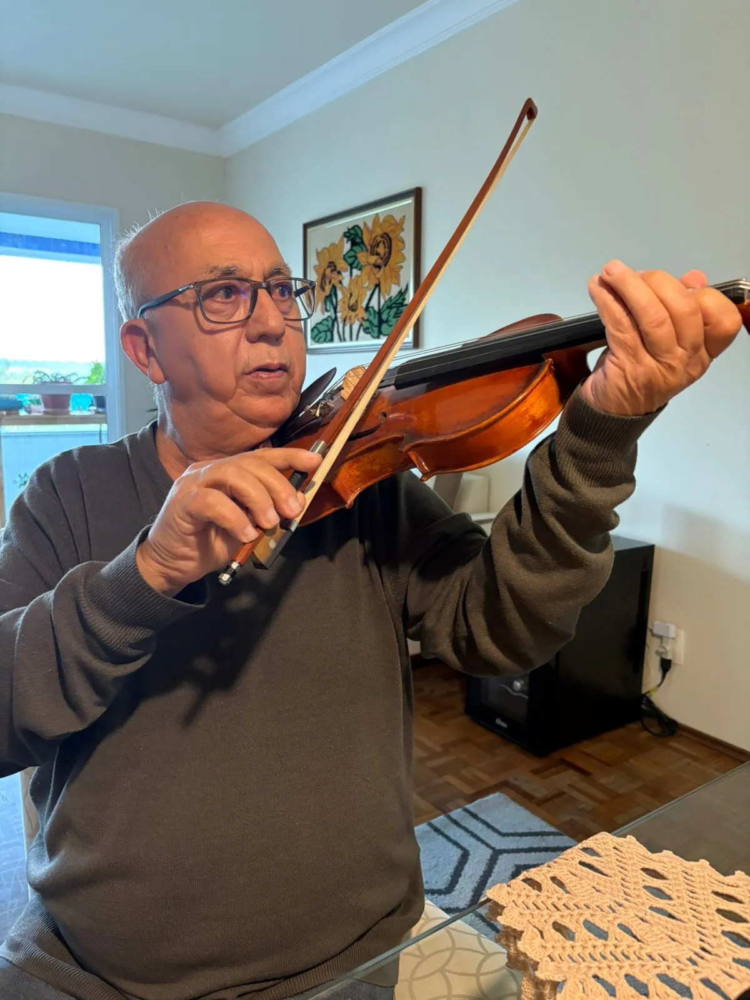
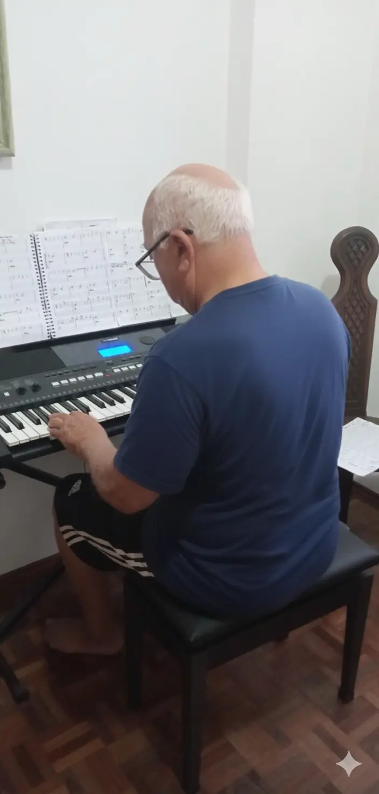
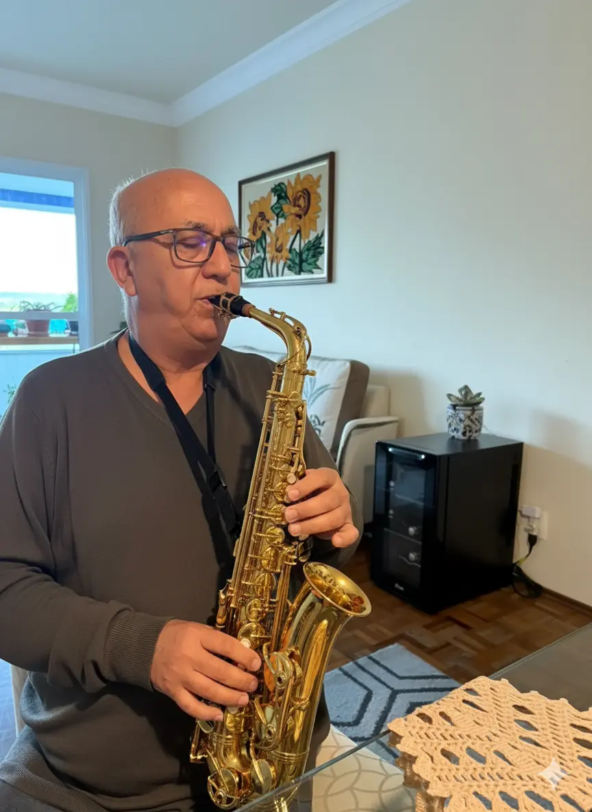

Homero is a self-taught musician and a great grandfather. He found his passion for music later in life and now creates beautiful melodies in his spare time.
The Heart of the Music
A collection of timeless melodies and heartfelt performances from Homero Ferreira.
Listen to His Work

About Homero
Homero found his deep passion for music later in life, proving it's never too late to begin
a new journey.
He has dedicated countless hours to mastering his craft, bringing joy and solace through his
melodies.
While not a professional, his talent and dedication shine through every note.
This portfolio is a tribute to his artistry and a window into his musical soul.
From classical inspirations to romantic songs and original compositions, his repertoire is
as
diverse as his life experiences.
He believes that music is a universal language and, through his performances, he seeks to
touch
hearts and inspire minds.
A Glimpse of His Journey
Writing his projects at the Keyboard.

Practicing on his Keyboard.
The magic in his hands.

From early days to now, music has been a constant.
Listen to His Music
I Didn't Lose
A music about love and time.
Saudade, que Saudade
A music about missing someone you love.
Água com Açúcar e Limão
A delicate and reflective melody, perfect for quiet evenings.
Frequently Asked Questions
No, Homero is an amateur musician. He plays for the love of music, not for a living. This portfolio is a way to share his passion and creations with a wider audience.
Homero's repertoire includes various styles, from romantic songs and classical pieces to his own original compositions. His work is heartfelt and diverse.
Get in Touch
If you'd like to reach out, share a thought, or simply connect, please feel free to send an email. Your messages are always appreciated!
Contact Page